<!DOCTYPE html>
<html lang="en">
<head>
    <meta charset="utf-8" />
    <meta name="viewport" content="width=device-width, initial-scale=1.0, maximum-scale=1.0, user-scalable=no" />

    <title></title>
    <link rel="stylesheet" href="../reveal-5.2.0/dist/reset.css">
    <link rel="stylesheet" href="../reveal-5.2.0/dist/reveal.css" />
    <link rel="stylesheet" href="../reveal-5.2.0/css/slides-extended.css" />
    <link rel="stylesheet" href="assets/css/devnexus-2023.css" id="theme" />
    <link rel="stylesheet" href="assets/css/github.highlight.css" />
    <link rel="stylesheet" href="../reveal-5.2.0/plugin/customcontrols/style.css">


    <link rel="stylesheet" href="assets/css/ebullient-talk.css" />

    <script defer src="../reveal-5.2.0/dist/fontawesome/all.min.js"></script>

    <script type="text/javascript">
        function pageInIframe() {
            return (window.location !== window.parent.location);
        }

        let forgetPop = true;
        function onPopState(event) {
            if(forgetPop){
                forgetPop = false;
            } else if( pageInIframe()) {
                parent.postMessage(event.target.location.href, "app://obsidian.md");
            }
        }
        window.onpopstate = onPopState;
        window.onmessage = event => {
            if(event.data == "reload"){
                window.document.location.reload();
            }
            forgetPop = true;
        }

        function fitElements() {
            const itemsToFit = document.getElementsByClassName('fitText');
            for (const item in itemsToFit) {
                if (Object.hasOwnProperty.call(itemsToFit, item)) {
                    const element = itemsToFit[item];
                    fitElement(element, 1, 1000);
                    element.classList.remove('fitText');
                }
            }
        }

        function fitElement(element, start, end) {

            let size = (end + start) / 2;
            element.style.fontSize = `${size}px`;

            if (Math.abs(start - end) < 1) {
                while (element.scrollHeight > element.offsetHeight) {
                    size--;
                    element.style.fontSize = `${size}px`;
                }
                return;
            }

            if (element.scrollHeight > element.offsetHeight) {
                fitElement(element, start, size);
            } else {
                fitElement(element, size, end);
            }
        }

        document.onreadystatechange = () => {
            fitElements();
            if (document.readyState === 'complete') {
                if (pageInIframe() && window.location.href.indexOf("?export") != -1){
                    parent.postMessage(event.target.location.href, "app://obsidian.md");
                }
                if (window.location.href.indexOf("print-pdf") != -1){
                    let stateCheck = setInterval(() => {
                        clearInterval(stateCheck);
                        window.print();
                    }, 250);
                }
            }
        };
    </script>
</head>

<body>
    <div class="reveal">
        <div class="slides"><section  data-markdown><script type="text/template"><!-- .slide: class="drop" template="" -->
<div class="" style="position: absolute; left: 0px; top: 0px; height: 700px; width: 960px; min-height: 700px; display: flex; flex-direction: column; align-items: center; justify-content: center" absolute="true">

## Quarkus in the Cloud:

### Strategies for Teams and Topologies


<span class="footer">Erin Schnabel, Red Hat<br ></br>[github.com/ebullient](https://github.com/ebullient) ・ [www.ebullient.dev](https://www.ebullient.dev/)</span>
</div></script></section><section  data-markdown><script type="text/template"><!-- .slide: class="fade-out left drop" data-background-image="assets/img/profile/erin-devoxx-2022-tall.jpg" template="" -->
<div class="" style="position: absolute; left: 0px; top: 0px; height: 700px; width: 960px; min-height: 700px; display: flex; flex-direction: column; align-items: center; justify-content: center" absolute="true">

### A little bit about me

- Developer of things at Red Hat
- IBMer for 21 years
- Java Champion
- Distinguished Engineer
- Dungeon/Game Master
- **I build ridiculous things** 

> [!danger] Disclaimer: too much fun with Dall-E

<div class="" style="position: absolute; left: 75%; top: 30%; height: 30%; width: 20%; display: flex; flex-direction: column; align-items: center; justify-content: center" >


</div>
</div></script></section><section  data-markdown><script type="text/template"><!-- .slide: class="drop" template="" -->
<div class="" style="position: absolute; left: 0px; top: 0px; height: 700px; width: 960px; min-height: 700px; display: flex; flex-direction: column; align-items: center; justify-content: center" absolute="true">

## Distributed computing... 

is inherently *complex*
</div></script></section><section  data-markdown><script type="text/template"><!-- .slide: class="drop" template="" -->
<div class="" style="position: absolute; left: 0px; top: 0px; height: 700px; width: 960px; min-height: 700px; display: flex; flex-direction: column; align-items: center; justify-content: center" absolute="true">

## Fallacies...
The things we think<em>*</em> are true, that aren't
<br ></br>

<split even class="small-text no-wrap">

<div class="block">

- The network is reliable&nbsp;&nbsp;&nbsp;  
- Latency is zero  
- Bandwidth is infinite  
- The network is secure  
</div>

 
<div class="block">

- Topology doesn’t change
- There is one administrator
- Transport cost is zero
- The network is homogenous
</div>


</split>

<p><br>
Penned by folks at Sun <em>in the 1990s</em>.<br >Still applies.
</p><!-- .element: class="small-text" -->

<div>
<div><em>*</em> effort to remember they are false</div>  
<div>https://en.wikipedia.org/wiki/Fallacies_of_distributed_computing</div><!-- .element: class="small-text" -->
</div><!-- .element: class="footer bottom" -->
</div></script></section><section  data-markdown><script type="text/template"><!-- .slide: class="no-title drop" template="" -->
<div class="" style="position: absolute; left: 0px; top: 0px; height: 700px; width: 960px; min-height: 700px; display: flex; flex-direction: column; align-items: center; justify-content: center" absolute="true">

## Complexity
<div class="" style="text-align: center; position: absolute; left: 30%; top: 5%; height: 10%; width: 40%; display: flex; flex-direction: column; align-items: center; justify-content: center" >

<h2>Complexity</h2>
</div>

<div class="" style="position: absolute; left: 30%; top: 18%; height: 50%; width: 40%; display: flex; flex-direction: column; align-items: center; justify-content: center" >


</div>


<div class="" style="position: absolute; left: 17%; top: 70%; height: 15%; width: 65%; display: flex; flex-direction: column; align-items: center; justify-content: center" >

 is always there  
<span>The question is:</span><!-- .element: class="fragment" data-fragment-index="1" data-autoslide="500" -->
<span> *who deals with it*?</span><!-- .element: class="fragment" data-fragment-index="2" -->
</div>

<div>
As a Java dev, these probably should be beans.
</div><!-- .element: class="footer bottom" -->
</div></script></section><section  data-markdown><script type="text/template"><!-- .slide: class="no-title drop" template="" -->
<div class="" style="position: absolute; left: 0px; top: 0px; height: 700px; width: 960px; min-height: 700px; display: flex; flex-direction: column; align-items: center; justify-content: center" absolute="true">

### mattresses


</div></script></section><section  data-markdown><script type="text/template"><!-- .slide: class="no-title drop" template="" -->
<div class="" style="position: absolute; left: 0px; top: 0px; height: 700px; width: 960px; min-height: 700px; display: flex; flex-direction: column; align-items: center; justify-content: center" absolute="true">

### kubernetes


</div></script></section><section  data-markdown><script type="text/template"><!-- .slide: class="drop" template="" -->
<div class="" style="position: absolute; left: 0px; top: 0px; height: 700px; width: 960px; min-height: 700px; display: flex; flex-direction: column; align-items: center; justify-content: center" absolute="true">

## Complexity

It is always there.  

<split even>


</split>

<span>We just move it around.</span><!-- .element: class="fragment" data-fragment-index="1" -->
</div></script></section><section  data-markdown><script type="text/template"><!-- .slide: class="no-title drop" template="" -->
<div class="" style="position: absolute; left: 0px; top: 0px; height: 700px; width: 960px; min-height: 700px; display: flex; flex-direction: column; align-items: center; justify-content: center" absolute="true">

## Perspective


</div></script></section><section  data-markdown><script type="text/template"><!-- .slide: class="no-title drop" template="" -->
<div class="" style="position: absolute; left: 0px; top: 0px; height: 700px; width: 960px; min-height: 700px; display: flex; flex-direction: column; align-items: center; justify-content: center" absolute="true">

## We want to vilify monoliths


<!-- https://www.stockfreeimages.com/109901192/Architecture-Bay-Building.html -->
</div></script></section><section  data-markdown><script type="text/template"><!-- .slide: class="no-title drop" template="" -->
<div class="" style="position: absolute; left: 0px; top: 0px; height: 700px; width: 960px; min-height: 700px; display: flex; flex-direction: column; align-items: center; justify-content: center" absolute="true">

### they were actually more like... 


<div class="" style="border: 2px solid tan; border-radius: 6px; font-weight: 900; color: white; background-color: #00000044; position: absolute; left: 35%; top: 65%; height: 20%; width: 30%; display: flex; flex-direction: column; align-items: center; justify-content: center" >

data
</div><!-- .element: class="larger-text fragment fade-in" data-autoslide="1000" data-fragment-index="1" -->
<div class="" style="border: 2px solid tan; border-radius: 6px; font-weight: 900; color: white; background-color: #00000044; position: absolute; left: 37%; top: 17%; height: 47%; width: 26%; display: flex; flex-direction: column; align-items: center; justify-content: center" >

business  
stuff
</div><!-- .element: class="larger-text fragment fade-in" data-autoslide="500" data-fragment-index="2" -->
<div class="" style="border: 2px solid tan; border-radius: 6px; font-weight: 900; background-color: #ffffff88; position: absolute; left: 16%; top: 17%; height: 47%; width: 20%; display: flex; flex-direction: column; align-items: center; justify-content: center" >

web  
stuff
</div><!-- .element: class="larger-text fragment fade-in" data-fragment-index="3" -->
<div class="" style="border: 2px solid tan; border-radius: 6px; font-weight: 900; background-color: #ffffff88; position: absolute; left: 63%; top: 17%; height: 47%; width: 20%; display: flex; flex-direction: column; align-items: center; justify-content: center" >

web  
stuff
</div><!-- .element: class="larger-text fragment fade-in" data-fragment-index="3" -->
</div></script></section><section  data-markdown><script type="text/template"><!-- .slide: class="no-title drop" template="" -->
<div class="" style="position: absolute; left: 0px; top: 0px; height: 700px; width: 960px; min-height: 700px; display: flex; flex-direction: column; align-items: center; justify-content: center" absolute="true">

## Monolith


<div class="" style="font-weight: 900; position: absolute; left: 42%; top: 50%; height: 20%; width: 30%; display: flex; flex-direction: column; align-items: center; justify-content: center" >

Authn/Authz
HA/DR  
TX  
</div>
</div></script></section><section  data-markdown><script type="text/template"><!-- .slide: class="no-title drop" template="" -->
<div class="" style="position: absolute; left: 0px; top: 0px; height: 700px; width: 960px; min-height: 700px; display: flex; flex-direction: column; align-items: center; justify-content: center" absolute="true">

## Enterprise Service Bus


<div class="" style="font-weight: 500; color: white; font-size: .8em; background: #00000088; position: absolute; left: 16%; top: 85%; height: 10%; width: 68%; display: flex; flex-direction: column; align-items: center; justify-content: center" >

ESB: central nervous system... communications between disparate systems and services
</div><!-- .element: class="fragment fade-in-then-out" data-fragment-index="1" -->

<div class="" style="font-weight: 500; color: white; font-size: .8em; background: #00000088; position: absolute; left: 16%; top: 85%; height: 10%; width: 68%; display: flex; flex-direction: column; align-items: center; justify-content: center" >

ESB <strong style="color: #90bff3">reduces complexity</strong> <br>by centralizing communication functions
</div><!-- .element: class="fragment fade-in" data-fragment-index="2" -->
</div></script></section><section  data-markdown><script type="text/template"><!-- .slide: class="no-title drop" template="" -->
<div class="" style="position: absolute; left: 0px; top: 0px; height: 700px; width: 960px; min-height: 700px; display: flex; flex-direction: column; align-items: center; justify-content: center" absolute="true">

## Rebellion

<div class="" style="position: absolute; left: 19%; top: 2%; height: undefined%; width: undefined%; display: flex; flex-direction: column; align-items: center; justify-content: center" >

### ESB 
</div>
<div class="" style="z-index: 26; position: absolute; left: 14%; top: 8%; height: undefined%; width: undefined%; display: flex; flex-direction: column; align-items: center; justify-content: center" >

(too smart)
</div><!-- .element: class="fragment fade-in" data-autoslide="1000" data-fragment-index="1" -->
<div class="" style="z-index: 26; position: absolute; left: 58%; top: 2%; height: undefined%; width: undefined%; display: flex; flex-direction: column; align-items: center; justify-content: center" >

### Smart endpoints   
</div><!-- .element: class="fragment fade-in" data-fragment-index="3" -->
<div class="" style="z-index: 26; position: absolute; left: 66%; top: 8%; height: undefined%; width: undefined%; display: flex; flex-direction: column; align-items: center; justify-content: center" >

(dumb pipes)
</div><!-- .element: class="fragment fade-in" data-fragment-index="3" -->

<div class="" style="position: absolute; left: 1%; top: 15%; height: 80%; width: 98%; display: flex; flex-direction: column; align-items: center; justify-content: center" >

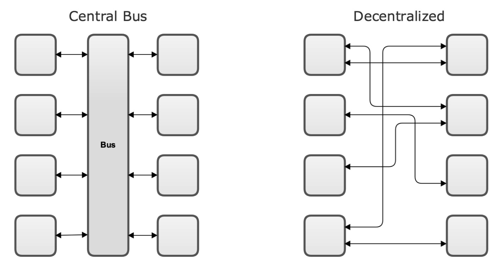

</div>

<div class="has-light-background" style="background-color: white; position: absolute; left: 30%; top: 28%; height: 59%; width: 25%; display: flex; flex-direction: column; align-items: center; justify-content: center" >

REBEL!  


</div><!-- .element: class="fragment fade-in" data-autoslide="1000" data-fragment-index="2" -->

<div class="has-light-background" style="background-color: white; position: absolute; left: 59%; top: 10%; height: 80%; width: 41%; display: flex; flex-direction: column; align-items: center; justify-content: center" >

&nbsp;
</div><!-- .element: class="fragment fade-out" data-fragment-index="3" -->
</div></script></section><section  data-markdown><script type="text/template"><!-- .slide: class="no-title drop" template="" -->
<div class="" style="position: absolute; left: 0px; top: 0px; height: 700px; width: 960px; min-height: 700px; display: flex; flex-direction: column; align-items: center; justify-content: center" absolute="true">

## Contrast

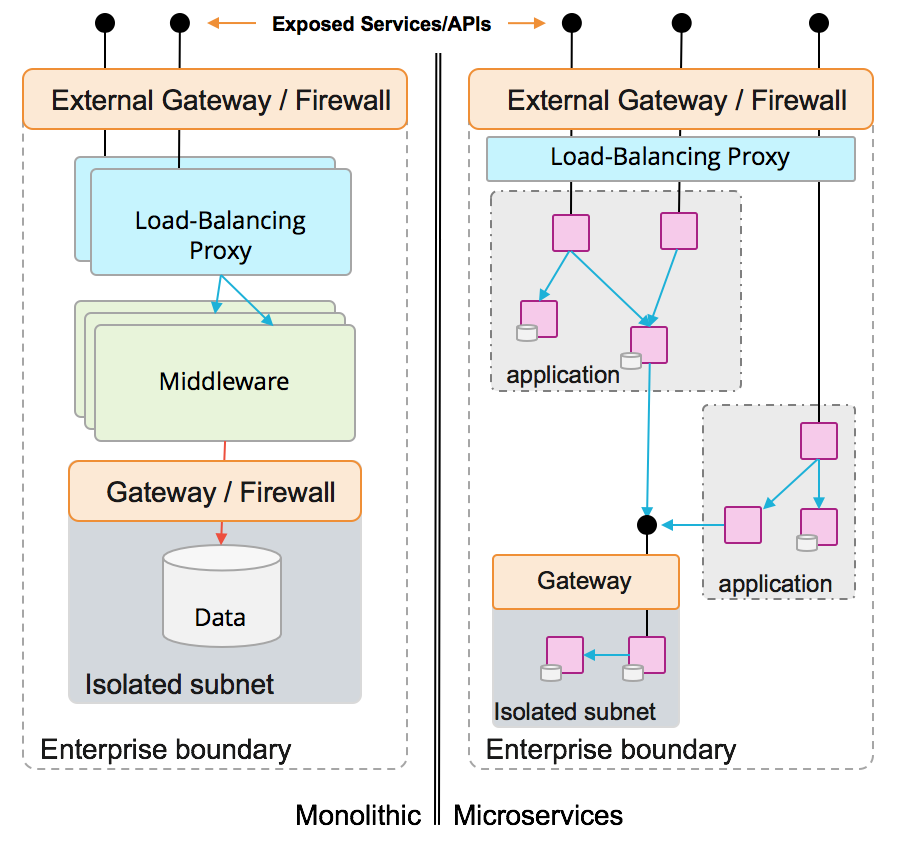


<!--
From Microservices Best Practices for Java
https://www.redbooks.ibm.com/abstracts/sg248357.html
 -->
</div></script></section><section  data-markdown><script type="text/template"><!-- .slide: class="no-title drop" template="" -->
<div class="" style="position: absolute; left: 0px; top: 0px; height: 700px; width: 960px; min-height: 700px; display: flex; flex-direction: column; align-items: center; justify-content: center" absolute="true">

## Microservices

</div></script></section><section  data-markdown><script type="text/template"><!-- .slide: class="no-title drop" template="" -->
<div class="" style="position: absolute; left: 0px; top: 0px; height: 700px; width: 960px; min-height: 700px; display: flex; flex-direction: column; align-items: center; justify-content: center" absolute="true">

### Each service deals with the complexity


</div></script></section><section  data-markdown><script type="text/template"><!-- .slide: class="no-title drop" template="" -->
<div class="" style="position: absolute; left: 0px; top: 0px; height: 700px; width: 960px; min-height: 700px; display: flex; flex-direction: column; align-items: center; justify-content: center" absolute="true">

## Rinse and repeat
<div class="" style="position: absolute; left: 25%; top: 10%; height: undefined%; width: undefined%; display: flex; flex-direction: column; align-items: center; justify-content: center" >

### And the cycle repeats
</div> 

<div class="" style="position: absolute; left: 4%; top: 20%; height: 58%; width: 42%; display: flex; flex-direction: column; align-items: center; justify-content: center" >


</div><!-- .element: class="fragment" data-fragment-index="1" data-autoslide="1000" -->

<div class="" style="font-size: 3em; position: absolute; left: 46%; top: 45%; height: 10%; width: 8%; display: flex; flex-direction: column; align-items: center; justify-content: center" >

➙
</div><!-- .element: class="fragment" data-fragment-index="2" data-autoslide="1500" -->

<div class="" style="position: absolute; left: 54%; top: 20%; height: 76%; width: 42%; display: flex; flex-direction: column; align-items: center; justify-content: center" >


Kubernetes  
Service Mesh
</div><!-- .element: class="fragment" data-fragment-index="3" -->
</div></script></section><section  data-markdown><script type="text/template"><!-- .slide: class="drop" template="" -->
<div class="" style="position: absolute; left: 0px; top: 0px; height: 700px; width: 960px; min-height: 700px; display: flex; flex-direction: column; align-items: center; justify-content: center" absolute="true">

## Serverless

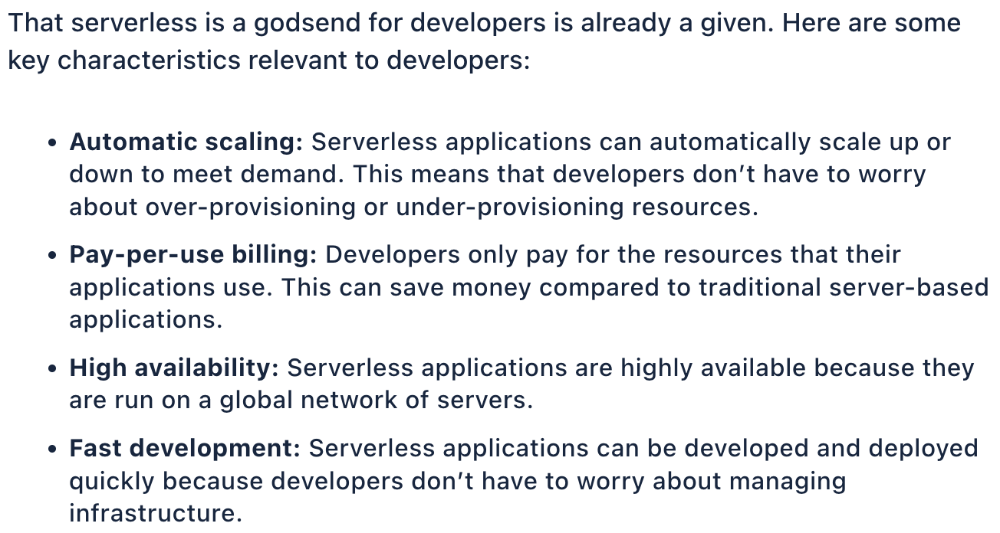


<span>https://thenewstack.io/serverless-computing-in-2024-genai-influence-security-5g/</span><!-- .element: class="smaller-text bottom footer" -->
</div></script></section><section  data-markdown><script type="text/template"><!-- .slide: class="drop" template="" -->
<div class="" style="position: absolute; left: 0px; top: 0px; height: 700px; width: 960px; min-height: 700px; display: flex; flex-direction: column; align-items: center; justify-content: center" absolute="true">

## 🧚‍♀️ Super nice fairy-story,

but *seriously*... 

- *Are Microservices still good* or what?
- Do we *need Serverless*?
- Should we just *go back to monoliths*? 😭 
- *What is a modular monolith*, anyway?
</div></script></section><section  data-markdown><script type="text/template"><!-- .slide: class="drop" template="" -->
<div class="" style="position: absolute; left: 0px; top: 0px; height: 700px; width: 960px; min-height: 700px; display: flex; flex-direction: column; align-items: center; justify-content: center" absolute="true">

<div class="larger-text" style="z-index: 26; position: absolute; left: 5%; top: 24%; height: 8%; width: 18%; display: flex; flex-direction: column; align-items: center; justify-content: center" >

⎯⎯⎯⎯
</div><!-- .element: class="fragment" -->

<div class="" style="position: absolute; left: 0%; top: 0%; height: 100%; width: 50%; display: flex; flex-direction: column; align-items: center; justify-content: center" >

## Microservices
#### Essential (12) factors 
Autonomous  
Portable  
Disposable  
<span>*Independent*</span><!-- .element: class="fragment" -->
</div>

<div class="" style="position: absolute; left: 50%; top: 0%; height: 100%; width: 50%; display: flex; flex-direction: column; align-items: center; justify-content: center" >

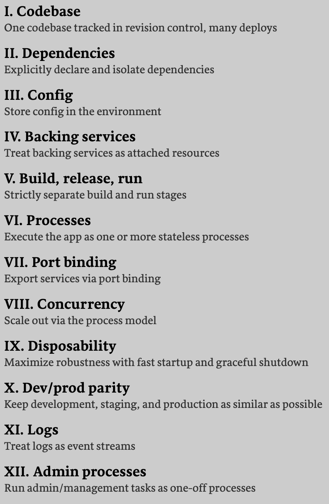

</div>
</div></script></section><section  data-markdown><script type="text/template"><!-- .slide: class="no-title drop" template="" -->
<div class="" style="position: absolute; left: 0px; top: 0px; height: 700px; width: 960px; min-height: 700px; display: flex; flex-direction: column; align-items: center; justify-content: center" absolute="true">

## Encapsulation / Data Hiding

<div class="has-dark-background" style="background-color: #333; position: absolute; left: 34%; top: 20%; height: 60%; width: 50%; display: flex; flex-direction: column; align-items: center; justify-content: center" >

</div> 

<div class="has-dark-background" style="background-color: #333; position: absolute; left: 24%; top: 12%; height: 80%; width: 60%; display: flex; flex-direction: column; align-items: center; justify-content: center" >


</div><!-- .element: class="fragment fade-in-then-out" -->

<div class="" style="position: absolute; left: 29%; top: 12%; height: 80%; width: 60%; display: flex; flex-direction: column; align-items: center; justify-content: center" >


</div><!-- .element: class="fragment fade-in" -->

<div class="has-light-background" style="background-color: white; position: absolute; left: 82%; top: 0%; height: 100%; width: 20%; display: flex; flex-direction: column; align-items: center; justify-content: center" >

</div> 

<div class="" style="position: absolute; left: 0%; top: 0%; height: 100%; width: 100%; display: flex; flex-direction: column; align-items: center; justify-content: center" z-index="26">

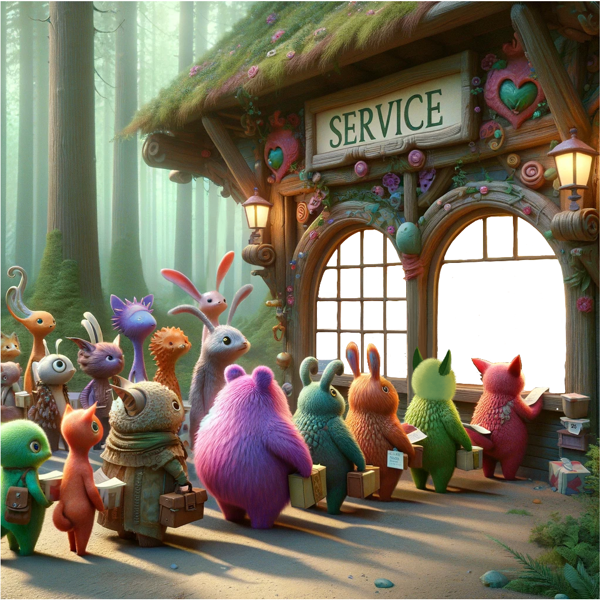

</div>
</div></script></section><section  data-markdown><script type="text/template"><!-- .slide: class="no-title drop" template="" -->
<div class="" style="position: absolute; left: 0px; top: 0px; height: 700px; width: 960px; min-height: 700px; display: flex; flex-direction: column; align-items: center; justify-content: center" absolute="true">

## Domain Driven Design
<div class="" style="position: absolute; left: 19%; top: 15%; height: undefined%; width: undefined%; display: flex; flex-direction: column; align-items: center; justify-content: center" >

## Domain Driven Design
</div> 

<div class="" style="position: absolute; left: 15%; top: 26%; height: 60%; width: 30%; display: flex; flex-direction: column; align-items: center; justify-content: center" >

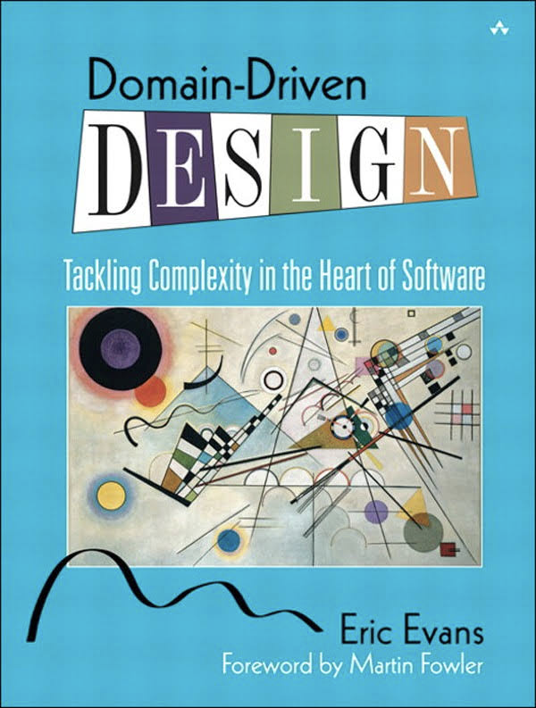

</div>

<div class="" style="position: absolute; left: 50%; top: 26%; height: 60%; width: 40%; display: flex; flex-direction: column; align-items: flex-start; justify-content: space-evenly" align="left">

*Bounded Context*  
*Ubiquitous Language*

[CUPID](https://gotopia.tech/articles/250/exploring-the-cupid-method-by-daniel-terhorst-north): domain-based  
human friendly
</div>


<span>https://gotopia.tech/articles/250/exploring-the-cupid-method-by-daniel-terhorst-north</span><!-- .element: class="smaller-text bottom footer" -->
</div></script></section><section  data-markdown><script type="text/template"><!-- .slide: class="no-title drop" template="" -->
<div class="" style="position: absolute; left: 0px; top: 0px; height: 700px; width: 960px; min-height: 700px; display: flex; flex-direction: column; align-items: center; justify-content: center" absolute="true">

## Domain-based structure

<div class="" style="position: absolute; left: 25%; top: 5%; height: undefined%; width: undefined%; display: flex; flex-direction: column; align-items: center; justify-content: center" >

### Modular monolith?
</div> 

<div class="" style="position: absolute; left: 5%; top: 15%; height: 75%; width: 90%; display: flex; flex-direction: column; align-items: center; justify-content: center" >

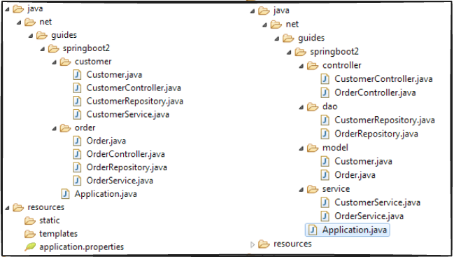

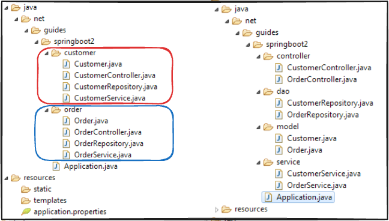

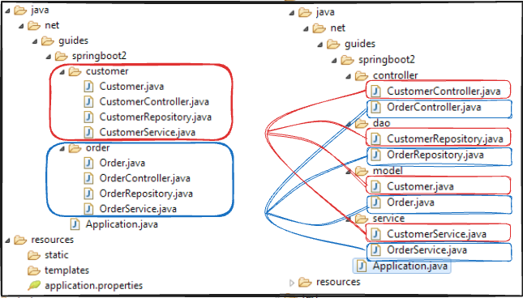

</div> 

<span>https://www.javaguides.net/2019/03/spring-boot-best-practices.html</span><!-- .element: class="smaller-text bottom footer" -->
</div></script></section><section  data-markdown><script type="text/template"><!-- .slide: class="no-title drop" template="" -->
<div class="" style="position: absolute; left: 0px; top: 0px; height: 700px; width: 960px; min-height: 700px; display: flex; flex-direction: column; align-items: center; justify-content: center" absolute="true">

## Team Topologies

<div class="" style="position: absolute; left: 19%; top: 15%; height: undefined%; width: undefined%; display: flex; flex-direction: column; align-items: center; justify-content: center" >

## Team Topologies
</div> 

<div class="" style="position: absolute; left: 5%; top: 26%; height: 60%; width: 45%; display: flex; flex-direction: column; align-items: center; justify-content: center" >

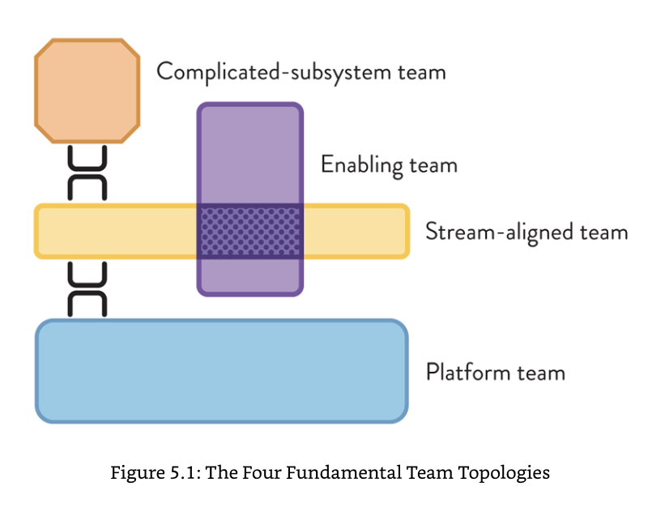

</div>

<div class="" style="position: absolute; left: 50%; top: 26%; height: 60%; width: 45%; display: flex; flex-direction: column; align-items: flex-start; justify-content: space-evenly" align="left">

 Conway's Law  

> If the architecture of the system and the architecture of the organization are at odds, 
> *the architecture of the organization wins*  
> – Ruth Malan, modern summary
<!-- .element: style="margin: 0px; width: 100%" class="smaller-text" -->
</div>
</div></script></section><section  data-markdown><script type="text/template"><!-- .slide: class="drop" template="" -->
<div class="" style="position: absolute; left: 0px; top: 0px; height: 700px; width: 960px; min-height: 700px; display: flex; flex-direction: column; align-items: center; justify-content: center" absolute="true">

## An experiment... 


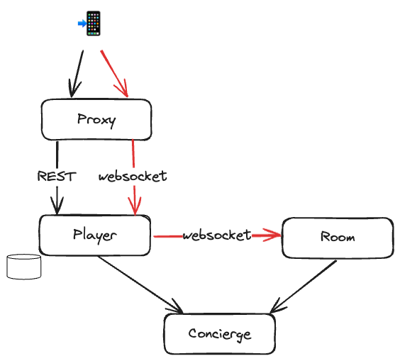

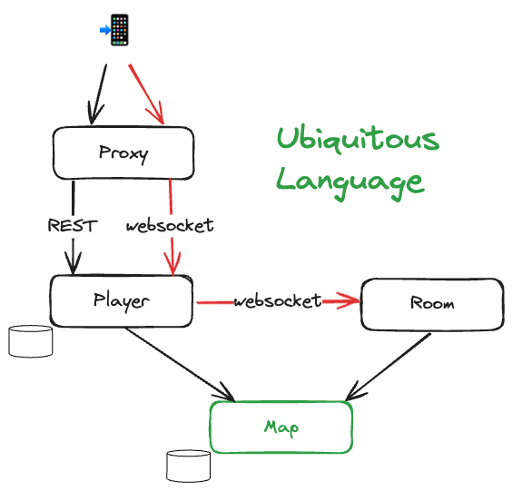

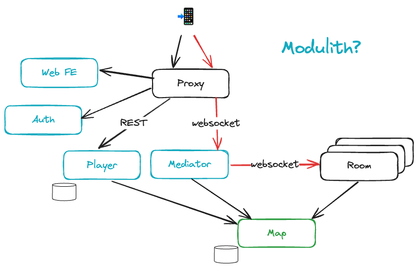
</div></script></section><section  data-markdown><script type="text/template"><!-- .slide: class="drop" template="" -->
<div class="" style="position: absolute; left: 0px; top: 0px; height: 700px; width: 960px; min-height: 700px; display: flex; flex-direction: column; align-items: center; justify-content: center" absolute="true">


</div></script></section><section  data-markdown><script type="text/template"><!-- .slide: class="drop" template="" -->
<div class="" style="position: absolute; left: 0px; top: 0px; height: 700px; width: 960px; min-height: 700px; display: flex; flex-direction: column; align-items: center; justify-content: center" absolute="true">

## What have we learned?

<span class="smaller-text">
... <em>more nuanced discussions</em> about how we build applications...  

1. should we be using monoliths or microservices? 
2. Should I use cloud functions? 
3. What is a modular monolith and is it a good idea or not?
</span>

*It depends*<!-- .element: class="fragment" -->
</div></script></section><section  data-markdown><script type="text/template"><!-- .slide: class="drop" template="" -->
<div class="" style="position: absolute; left: 0px; top: 0px; height: 700px; width: 960px; min-height: 700px; display: flex; flex-direction: column; align-items: center; justify-content: center" absolute="true">

## What have we learned?

- Write code for future you (*CUPID* from Daniel North)
- *Conway's law* is powerful
- Always start with a *coarse structure*, by domain
    - *ubiquitous language* helps (naming things is hard)
    - you will get it wrong
- Don't treat existing monoliths like a piñata
    - Data and organization will be the constraint
</div></script></section><section  data-markdown><script type="text/template"><!-- .slide: class="drop" template="" -->
<div class="" style="position: absolute; left: 0px; top: 0px; height: 700px; width: 960px; min-height: 700px; display: flex; flex-direction: column; align-items: center; justify-content: center" absolute="true">

<split even>


<div class="block">


</div>


</split>

*\~fin\~*
</div></script></section></div>
    </div>

    <script src="../reveal-5.2.0/dist/reveal.js"></script>
    <script src="../reveal-5.2.0/plugin/notes/notes.js"></script>
    <script src="../reveal-5.2.0/plugin/markdown/markdown.js"></script>
    <script src="../reveal-5.2.0/plugin/obsidian-markdown.js"></script>
    <script src="../reveal-5.2.0/plugin/highlight/highlight.js"></script>

    <script src="../reveal-5.2.0/plugin/zoom/zoom.js"></script>
    <script src="../reveal-5.2.0/plugin/math/math.js"></script>
    <script src="../reveal-5.2.0/plugin/mermaid/mermaid.js"></script>
    <script src="../reveal-5.2.0/plugin/chart/chart.umd.js"></script>
    <script src="../reveal-5.2.0/plugin/chart/plugin.js"></script>
    <script src="../reveal-5.2.0/plugin/menu/menu.js"></script>
    <script src="../reveal-5.2.0/plugin/customcontrols/plugin.js"></script>


    <script>
        function extend() {
            const target = {};
            for (let i = 0; i < arguments.length; i++) {
                const source = arguments[i];
                for (const key in source) {
                    if (source.hasOwnProperty(key)) {
                        target[key] = source[key];
                    }
                }
            }
            return target;
        }

        function isLight(color) {
            // normalize to rgb(a)
            const optionEl = document.createElement("option");
            optionEl.style.color = color;
            const normalizedColor = optionEl.style.color;

            const match = normalizedColor.match(/(\d+), (\d+), (\d+)/);
            if (!match) return false;
            const [, c_r, c_g, c_b] = match;

            const brightness = ((c_r * 299) + (c_g * 587) + (c_b * 114)) / 1000;
            return brightness > 155;
        }

        const bgColor = getComputedStyle(document.documentElement).getPropertyValue('--r-background-color').trim();

        if (isLight(bgColor)) {
            document.body.classList.add('has-light-background');
        } else {
            document.body.classList.add('has-dark-background');
        }

        // default options to init reveal.js
        const defaultOptions = {
            controls: true,
            progress: true,
            history: true,
            center: true,
            transition: 'default', // none/fade/slide/convex/concave/zoom
            plugins: [
                ObsidianMarkdown,
                RevealHighlight,
                RevealZoom,
                RevealNotes,
                RevealMath.KaTeX,
                RevealMermaid,
                RevealChart,
                RevealCustomControls,
                RevealMenu,
            ],
            allottedTime: "120",

            katex: {
                local: '../reveal-5.2.0/plugin/math/katex',
                extensions: ["mhchem"],
            },
            markdown: {
                gfm: true,
            },
            mermaid: {
                theme: isLight(bgColor) ? 'default' : 'dark',
            },
            customcontrols: {
                controls: [
                ]
            },
            menu: {
                loadIcons: false
            },
        };

        if ( pageInIframe() ) {
            defaultOptions.scrollActivationWidth = 5;
        }

        // options from URL query string
        const queryOptions = Reveal().getQueryHash() || {};

        const options = extend(defaultOptions, {"controls":true,"progress":false,"slideNumber":true,"center":true,"transition":"fade-in","transitionSpeed":"normal","width":960,"height":700,"margin":0.04}, queryOptions);
    </script>

    <script>
      /**
       * KaTeX Equation Numbering Note
       *
       * KaTeX maintains a global equation counter for \begin{equation} environments.
       * When navigating between slides, reveal.js math plugin may re-render math, causing
       * equation numbers to change randomly.
       *
       * Note: Regular $$ blocks don't have equation numbers - only \begin{equation} does.
       *
       * If you experience issues with equation numbers changing:
       * Use manual \tag{} commands: \begin{equation}\tag{1} ... \end{equation}
       */

      Reveal.initialize(options);
    </script>
    <!-- created with Slides Extended reveal.html template -->
</body>
</html>
